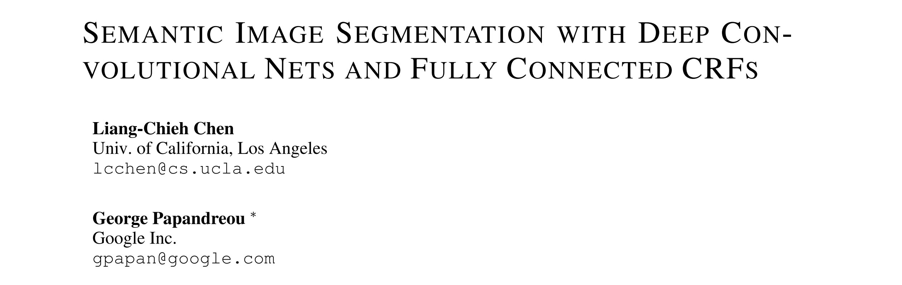

#DeepLab# 中的空洞卷积和条件随机场
简要总结
DeepLab V1 和 DeepLab V2，DeepLab 是语义分割的经典网络架构。其有两个核心要点：
（1）空洞卷积（Atrous Convolution/‘hole’ algorithm/Dilated Convolution）
（2）条件随机场（Fully-Connected CRF）
DeepLab V1 的提出时间是 2014 年 12 月，基干网络选择了 2014 年 10 月份所提出 VGG-16。专为图像分类任务而设计的 VGG 在语义分割任务上的表现并不出色，这是由于：
- （1）最大池化和 “Stride”会使得分辨率降低。
- （2）语义分割任务仍需要空间转换的不变性（语义分割仍是一个分类问题），这从本质上限制了 DCNN 模型的空间准确性。
这两个原因造成的。DeepLab V1 针对这两个问题使用的解决方案是：空洞卷积、CRF。
DeepLab V2 的提出时间是 2016 年 06 月，基干网络选择了 2015 年 12 月所提出的 ResNet。在 DeepLab V1 的基础之上，V2 强调了空洞卷积 ‘Atrous Convolution’ 作为语义分割任务的一项强大工具，并提出了 atrous spatial pyramid pooling (ASPP) 提取融合多尺度信息，在多个数据集上进行了丰富的实验评估。
DeepLab V1 可以总结为以下几点：
- 基于 VGG-16，全连接层转换为 1×1 卷积层
- 删除了最后两个 max-pooling（或者说是最后两个池化层不改变特征图的大小）
- 空洞卷积“Atrous algorithm”调整感受野
- 使用双线性插值上采样 8× 得到原图大小
- 使用全连接 CRF 进行边界恢复
- 多尺度预测
DeepLab V2 总结为以下几点：
- 使用 ResNet 作为基干网络
- ASPP 模块
- 丰富的实验
DeepLab V1
Chen, L., Papandreou, G., Kokkinos, I., Murphy, K., & Yuille, A. (2015). Semantic Image Segmentation with Deep Convolutional Nets and Fully Connected CRFs. CoRR, abs/1412.7062.
-
期刊：ICLR 2015
-
论文地址（DeepLab V1）: https://arxiv.org/abs/1412.7062

作者简介：
-
Google Research Scientist
摘要
DCNNs（Deep Convolutional Neural Networks）在图像分类和目标检测任务上取得了 SOTA 的成绩，但是在物体分割任务上表现得并不精确。论文的主要工作是结合 DCNNs（Deep Convolutional Neural Networks） 和概率图形模型的方法，以解决像素级分类（语义图像分割）的任务。
DeepLab V1 在 PASCAL VOC-2012 语义图像分割任务中取得了 SOTA，在测试集中达到了 71.6% 的 IOU 准确性。
1. Introduction
以端到端方式训练的 DCNN 取代了依靠人工精心设计的特征，如 SIFT 或 HOG。DCNN 的成功可以部分归因于其对局部图像转换的内在不变性（invariance），这也是它们学习数据的分层抽象的能力的基础。
这种不变性有利于高层次的视觉任务（如图像分类），不利于低层次的任务（如语义分割）。在低层次的任务中，我们想要精确的定位，而不是空间细节的抽象。
在 DCNN 应用于图像标记任务中，有两个技术障碍。 （1）最大池化和 “Stride”会使得分辨率降低。
（2）语义分割任务仍需要空间转换的不变性（语义分割仍是一个分类问题），这从本质上限制了 DCNN 模型的空间准确性。
本篇论文对这两个问题的解决方案分别是：
- ‘atrous’ (with holes) algorithm
- 全连接的条件随机场（CRF）
2. 相关工作（略）
3. 用于密集图像标记的卷积神经网络
3.1 ‘HOLE’ ALGORITHM
将 VGG-16 的全连接层转换为卷积层，作为特征图提取。5 个最大池化跳过了后两个，或者将最后两个最大池化 stride = 1，kernal = 3，这样得出的特征图大小不变。
- DeepLab V1：https://github.com/wangleihitcs/DeepLab-V1-PyTorch/blob/master/nets/vgg.py
# max pooling
nn.MaxPool2d(kernel_size=3, stride=1, padding=1),
最大池化层的改动，影响到了其后卷积层的感受野大小，通过引入 0 来修改（上采样）卷积核。 保持卷积核的完整，而对它们所应用的特征图分别使用 2 或 4 像素的输入跨度进行稀疏采样。如下图 1 所示，称为 hole algorithm（Atrous algorithm）。
将最后的 1000-way 输出修改为 21-way，ground truth (subsampled by 8)，即最后网络的输出相对于原图像小 8 倍，然后使用双线性插值将其分辨率提高 8 倍。
3.2 边界恢复：完全连接的 CRF 和 Muti-Scale

定位精度和分类性能之间的权衡似乎是 DCNN 所固有的：事实证明，具有多个最大池层的较深模型在分类任务中是最成功的，然而，增加的不变性和顶层节点的大感受野只能产生平滑的效果（Fig 2. 边界模糊）。
如上图，DCNN 的 Score maps 能预测物体的存在和大致位置，但不能真正划定其边界。
有两种方法解决这个问题： （1）利用卷积网络中的多层信息，以便更好的估计边界。 （2）采用超级像素表示法，基本上将精确定位任务委托给低级别的分割方法。
本篇论文追求另一个方向，即把 DCNN 的识别能力和全连接 CRF 的细粒度定位精度结合起来。全连接 CRF 在解决定位挑战方面非常成功，产生了准确的语义分割结果，并在现有方法无法达到的细节水平上恢复了物体的边界。
条件随机场（CRFs）被用来平滑嘈杂的分割图。一般来说，模型将相邻的节点结合在一起，倾向于将相同的标签分配给空间上近似的像素。
而从 Fig 2 可以看出，DCNN 输出的 Score map 是相当平滑的，并产生同质化的分类结果。在这种情况下，我们需要恢复局部结构，而不是平滑它。
Energy Function：
Gaussian Kernel：
这里见 PPT，我会从 Random Field Models，到 Filtering，再到 Dense Random Fields，依次介绍其优缺点，从宏观的角度去了解这个后处理操作。
考虑多尺度信息能够提升最后分割的精度，与 FCN skip layer 类似，如下示意图所示。
4. 实验结果
数据集：PASCAL VOC 2012，21 类，包含 20 个前景对象类和 1 个背景类。
（a）
- CRF 带来 4% 的性能提升（分割效果如 Fig 7 所示）
- 多尺度 MSc 带来带来 1.5% 的性能提升（分割效果如 Fig 4）
采用的 “Atrous algorithm” 允许通过调整输入步幅来任意控制模型的感受野（Field-Of-View, FOV）。
与 SOTA 方法进行比较。
总结
DeepLab V1 可以总结为以下几点：
- 基于 VGG-16，全连接层转换为 1×1 卷积层
- 删除了最后两个 max-pooling（或者说是最后两个池化层不改变特征图的大小）
- 空洞卷积“Atrous algorithm”调整感受野
- 使用双线性插值上采样 8× 得到原图大小
- 使用全连接 CRF 进行边界恢复
- 多尺度预测
DeepLab V2
Chen, L., Papandreou, G., Kokkinos, I., Murphy, K., & Yuille, A. (2018). DeepLab: Semantic Image Segmentation with Deep Convolutional Nets, Atrous Convolution, and Fully Connected CRFs. IEEE Transactions on Pattern Analysis and Machine Intelligence, 40, 834-848.
- 论文地址 DeepLab V2: https://arxiv.org/abs/1606.00915
- 期刊：全称 IEEE Transactions on Pattern Analysis and Machine Intelligence (TPAMI)，简称为 IEEE PAMI 或者（PAMI）
摘要
论文使用深度学习解决了语义图像分割的任务，有三个主要贡献：
（1）强调了空洞卷积 ‘Atrous Convolution’ 作为语义分割任务的一项强大工具。
（2）提出了 atrous spatial pyramid pooling (ASPP)，考虑多尺度信息。
（3）将最后一个 DCNN 层的响应与全连接的条件随机场（CRF）相结合来改善物体边界的定位。
1. Introduction
DCNN 在语义图像分割中应用的三个挑战：
（1）特征分辨率的降低
（2）多尺度物体的存在
（3）由于DCNN的不变性而降低了定位精度
第一个挑战分辨率的降低，这是由于 DCNNs 的最大池化层和降采样层的堆叠造成的，这个结构是为分类而设计的。特征图的空间分辨率降低对于分割任务来说是非常不利的。
为了解决这个问题，DeepLab V2 移除了 max-pooling 层，使用升采样的卷积核（空洞卷积），最后使用双线性插值恢复到原始图像大小。与普通的卷积相比，空洞卷积在不增加额外计算量和参数量的情况下，有效增加了感受野大小。
第二个挑战是由多个尺度的物体的存在引起的。传统的解决方案是在 DCNN 层计算输入图像的多个尺度比例的特征响应，进行汇总。受到 spatial pyramid pooling 的启发，本论文提出 “atrous spatial pyramid pooling” (ASPP)，通过使用用具有互补的感受野的多个卷积核来探测原始图像，从而在多个尺度上捕获物体和有用的图像背景。
第三个挑战是：以物体为中心的分类器需要对空间变换保持不变，这本身就限制了 DCNN 的空间准确性。一种解决方案是使用跳跃连接（ResNet）；本论文则通过采用完全连接的条件随机场（CRF），提高了模型对精细细节的捕捉能力。Fully Connected CRF，具有计算效率高、能够捕捉到精细的边缘细节、满足长距离的依赖等优点。
DeepLab V2 总体流程：
DeepLab 具有如下三个优点：
- (1) Speed
- (2) Accuracy
- (3) Simplicity
与 DeepLab V1 相比，V2 有如下改变：
（1）ASPP：在多个尺度上更好地分割物体
（2）使用了 ResNet-101
（3）进行了更多的实验评估
2. Related Works（略）
3. Methods
DeepLab V2 的核心有三个：空洞卷积、ASPP、全连接的 CRF。
3.1 Atrous Convolution for Dense Feature Extraction and Field-of-View Enlargement
最大池化和卷积步幅使得特征图的分辨率降低，‘deconvolution’ 虽然可以缓解，但是需要引入额外的内存和时间消耗。
空洞卷积最初是为小波变换开发的。空洞卷积算法使我们能够以任何理想的分辨率计算任何一层的输出，可以与预训练的模型无缝结合。
一维的信号：x[i] 为输入的信号，w[k] 表示卷积核，y[i] 表述输出，r 扩张率，表示对输入信号进行采样的步长，r=1 表示标准的卷积。
2-D 图像示例：
先进行下采样，再进行卷积，最后升采样。 如果把得到的特征图植入原始图像的坐标，会发现我们只在图像的 1/4 位置获得了响应。
如果使用空洞卷积，尽管卷积核的尺寸变大了，但是仅需要考虑非 0 值，参数的数量和每个位置的操作数保持不变。 这个方案使我们能够轻松而明确地控制神经网络特征反应的空间分辨率。
接下来是关于空洞卷积的感受野，在不增加参数和计算量的情况下，k×k 扩大称为 k + (k-1)(r-1)。如 3×3,r=2，其感受野为 3 + (3 - 1)(2 - 1) = 5。因此，它提供了一个有效的机制来控制感受野，并在准确定位（小感受野）和上下文信息（大感受野）之间找到最佳平衡点。
空洞卷积的实现有两种方式：
（1） 第一种是通过插入空洞（0）来隐含地对卷积核进行升采样，或者说是对输入特征图进行稀疏采样。
（2）第二种是对输入特征图进行子采样。
3.2 Multiscale Image Representations using Atrous Spatial Pyramid Pooling (ASPP)
研究表明，考虑物体的尺度可以提高 DCNN 成功处理大物体和小物体的能力。有两种方法：
（1）标准的多尺度处理 从多个重新缩放的原始图像中提取 DCNN 得分图，最后进行融合。（DeepLab V1）
（2）ASPP 研究表明，任意尺度的区域可以通过对单一尺度提取的卷积特征进行重采样来准确有效地分类。使用了多个并行的非线性卷积层，具有不同的采样率，为每个采样率提取的特征在不同的分支中进一步处理，并融合以产生最终结果。
3.3 全连接的 CRF 进行边界恢复
同 DeepLab V1。
4. EXPERIMENTAL RESULTS
DeepLab V2 进行了丰富的实验。
基干网络使用 ResNet-101，数据集有 PASCAL VOC 2012, PASCAL-Context, PASCALPerson-Part, and Cityscapes。
这里我只列出 PASCAL VOC 2012，方便与 DeepLab V1 进行比较。
ASPP
DeepLab V2：79.7%，DeepLab V1：71.5%。
基干网络 VGG-16 和 ResNet-101 比较：
总结
DeepLab V2 总结为以下几点：
- 使用 ResNet 作为基干网络
- ASPP 模块
- 丰富的实验
Reference
[1] Chen, L., Papandreou, G., Kokkinos, I., Murphy, K., & Yuille, A. (2015). Semantic Image Segmentation with Deep Convolutional Nets and Fully Connected CRFs. CoRR, abs/1412.7062.
[2] Chen, L., Papandreou, G., Kokkinos, I., Murphy, K., & Yuille, A. (2018). DeepLab: Semantic Image Segmentation with Deep Convolutional Nets, Atrous Convolution, and Fully Connected CRFs. IEEE Transactions on Pattern Analysis and Machine Intelligence, 40, 834-848.
[3] https://www.cs.cmu.edu/~efros/courses/LBMV12/crf_deconstruction.pdf
[4] http://vision.stanford.edu/teaching/cs231b_spring1415/slides/philipp_densecrf.pdf
[5] https://web.cs.ucdavis.edu/~yjlee/teaching/ecs289g-winter2018/DeepLab.pdf